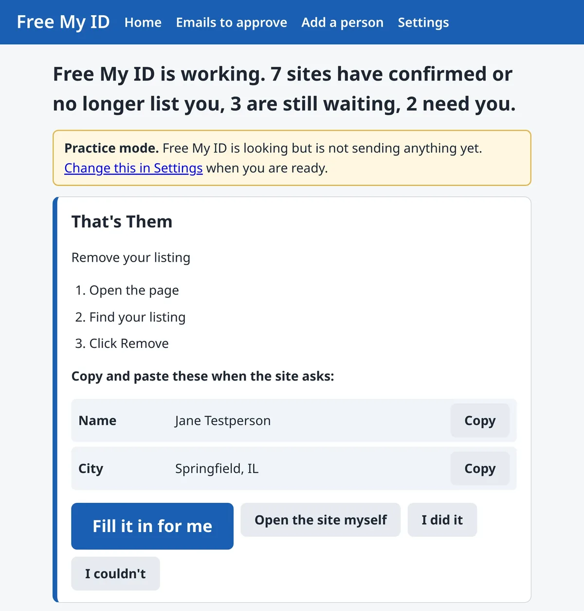
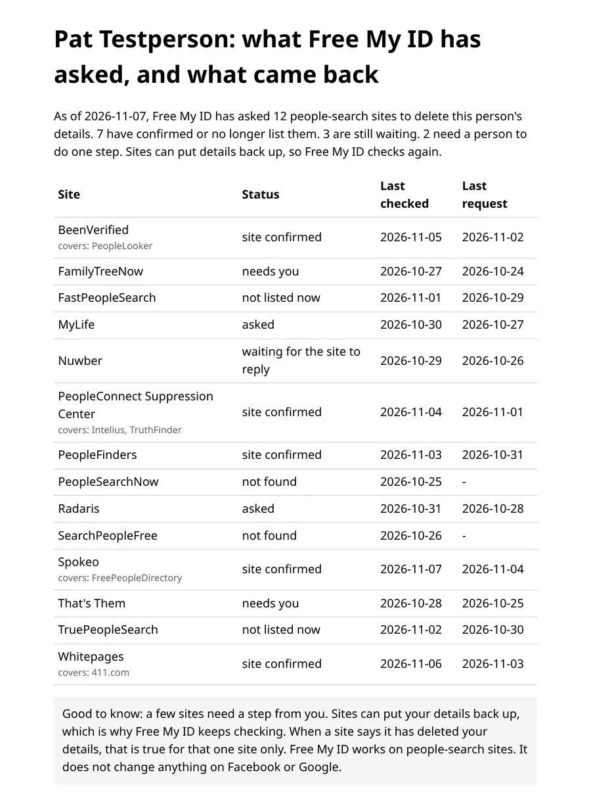

Free. Open source. For Windows.
Take your name off the websites that sell it.
Free My ID asks the people-search and data-broker sites that list your name, address and phone number to remove them, then keeps checking. It runs on your own computer. No account. No cloud.
Free for Windows 10 and 11. Version 0.1.2 is an early release, so tell us what confuses you (a free GitHub account is needed).
Windows may show a blue "protected your PC" box the first time. That's expected. Here's what to click.

See exactly what was asked, and what came back.
Free My ID keeps a plain list: which site, when it asked, where things stand, and when it last checked. You can print it.


Some sites remove you in days. Some take weeks. Some ignore the request, and the report shows those too.
How it works, in three steps
Tell it who to protect.
Six short screens: your name and the towns you have lived in. It never asks for your Social Security number or bank details.
It sends the requests.
By email, by walking you through a site's form, or by filling the form in while you watch. Each site gets only what it already shows about you.
It keeps checking.
Once a day, quietly in the background, while your computer is on and you are signed in. You see who confirmed, who is still waiting, and it asks again if a site lists you again.
What people-search sites are selling about you.
People-search sites, also called data brokers, collect public records and sell them to anyone. Here is what they commonly list:
Home address
Phone numbers
Age or birth year
We have step-by-step guides for 29 sites, and you can use every guide without the app. Browse the guides
You said "I do not consent." Here is how to make it count.
If you shared that post on Facebook, you were right to object. The post just went to the wrong place, and in a form nobody is required to honor. The people who sell your address are the people-search sites, and each has its own removal process. Free My ID sends your request there, in the form each site actually processes, and in states with a broker privacy law, as a formal legal request.
It does not change what Facebook itself does with your account.
Free My ID, paid removal services, or doing it by hand
| Question | Free My ID | Paid removal services (typical) | By hand |
|---|---|---|---|
| Price | Free | Yearly or monthly fee | Free, your time |
| Where your details go | Only to the sites you ask to remove you | Sent to the company | Only to the sites you contact |
| Account | None | Account required | None |
| Who sends the requests | Your own computer, as you | The company, on your behalf | You |
| Keeps checking | Yes, daily on your PC (your computer must be on and you must be signed in to Windows at the time) | Yes, on a schedule | Only if you remember |
| Company staff handle hard cases | No. Some sites need you to do a step, and it shows you how | Often, on higher plans | You |
"Typical" describes the category, not any one company. Features and prices vary by service. Reviewed 2026-11-07.
Free My ID is open source, so you can read it. Made for Windows 10 and 11. Version 0.1.2 is out now.
If you'd rather have a company handle it for you, a paid service may suit you better. We'll say so plainly.
Built so you can check our work.
Your details are stored on your computer. Nothing is sent to us.
Your details are stored only on your computer. They go out only in a removal request you approve, sent straight to that one site. Your stored details are encrypted. The app talks only to the sites you are asking to remove you, your own email account, and our public list of those sites.
It never asks for the wrong things.
Never your Social Security number. Never bank or card details. Never a payment. Never a phone number or ID unless you choose to.
You can check the work.
The code is public. Every download has a fingerprint you can compare. Uninstalling removes the program and its daily check.
Free My ID does
- Ask people-search and data-broker sites to remove your listing, using each site's own process
- Send a formal legal request where your state's privacy law applies, and a polite request everywhere else
- Click the "confirm your request" links that sites send, and follow up when a site goes quiet
- Check again later, because some sites list people again
- Show you where each site stands: asked, confirmed or still waiting
Free My ID does not
- Remove you from every website on the internet. Nobody honest can promise that.
- Change what Facebook itself does with your account
- Stop hacking, phone tapping or government surveillance
- Remove news stories, social media posts or government records
- Ask for your Social Security number, bank or card details. Ever.
It's free
Free My ID
$0
Free. No trial. No card.
- Everything the app does, all three ways of sending requests
- Daily re-checks on your PC
- Printable progress report
- Every guide
- Uninstall any time
Why is it free?
Free My ID is open-source software, so anyone can read it and anyone can use it. It exists to help ordinary people, starting with the author's own family.
Helping a parent or grandparent?
Set it up once on their computer, and it keeps working. They stay in control, and can stop or uninstall at any time.
- Set it up on their computer in one visit, or protect several family members from one computer.
- Each adult gives their own permission. Free My ID won't work on anyone without it.
- Practice mode comes first, so nothing is sent until you say so.
Windows only for now. The person whose information is listed should agree to this.
Common questions
Is it really free?
Yes. There is no trial, no card and no account. The app is free and open source.
Is this a scam? How do I know?
We never ask for your Social Security number, bank or card details, and the app never asks for a payment. The code is public, and you can check the download's fingerprint. How to check that Free My ID is genuine.
Where does my information go?
Your details are stored only on your computer. They go out only in a removal request you approve, sent straight to that one site. Nothing is sent to us. The app contacts only the sites you are asking to remove you, your own email and our public list of sites. What Free My ID stores, and where.
Will this remove me from the whole internet?
No, and be wary of anyone who promises that. Free My ID asks people-search and data-broker sites to remove your listing, shows you which ones confirmed, and keeps checking. It can't remove news stories, social media posts or government records.
I posted "I do not consent." Did that work?
You were right to object. On its own, that post doesn't reach the sites that sell your details. Free My ID sends your wish to them directly. Read more about the "I do not consent" post.
How long does it take?
Setup is six short screens. Some sites remove you within days; others take weeks. Free My ID keeps track so you don't have to.
Why does Windows warn me when I install it?
Windows shows a blue "Windows protected your PC" box for new programs that haven't bought a publisher certificate. Free My ID hasn't bought one yet. See what to click, with pictures.
Is there a Mac or phone version?
Not yet. Free My ID is made for Windows 10 and Windows 11.
Your information. Off the market.
Free, open source, and it runs on your own computer, checking once a day. Read the source code.
Download Free My IDNo account. No cloud. Never asks for your Social Security number. Uninstall any time.